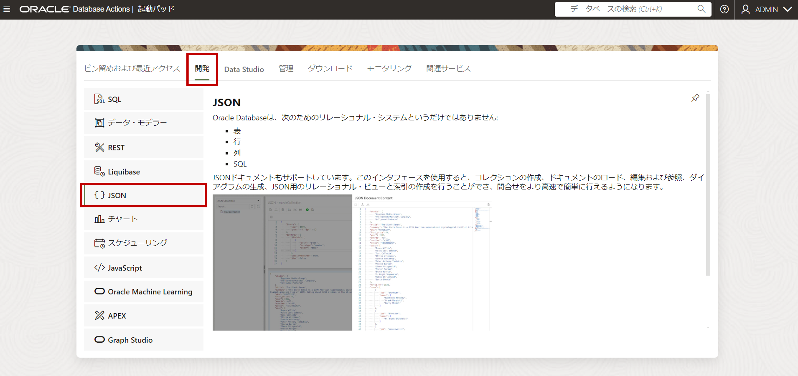

はじめに
コンバージド・データベースとは、あらゆるデータをサポートするマルチモデルを採用し、あらゆるワークロードをサポートしていくこと、また様々なツールをDBに統合し開発生産性に貢献していくという、Oracle Databaseのコンセプトの一つです。
Autonomous Databaseもコンバージド・データベースとして、RDBのフォーマットだけでなく、JSON、Text、Spatial、Graphといった様々なフォーマットを格納しご利用いただけます。
格納されるデータの種類ごとにデータベースを用意するのではないため、データの重複や整合性に関する懸念は不要であり、またそのためのETLツールを検討する必要もなく、結果的にコストを抑えることが可能です。
では、実際にどのように操作するのでしょうか？このページではJSONを例にその操作方法の一例を紹介します。
前提条件
- ADBインスタンスが構成済みであること
※ADBインタンスの作成方法については、101:ADBインスタンスを作成してみよう を参照ください。
目次
所要時間 : 約20分
1. データを格納してみよう
まずはJSONデータをADBインスタンスに登録し、登録したデータを確認しましょう。ここではSODA APIを実行できるDatabase Actionsを利用します。
SODA APIは、Simple Oracle Document Accessの略で、オラクルが用意するJSONデータにアクセスする際のAPIです。新たにJSONコレクションを作成する、挿入、検索、変更や削除にご利用いただけます。SQLで言えばDDL、DMLに当たります。
このSODA APIはJavaScriptはもちろん、JavaやPython, PL/SQLなどからCallして利用することが可能ですし、SQLclやDatabase Actionsではデフォルトでインストールされています。
（参考資料: Autonomous JSON Database 技術概要 ）
-
Database Actionsにアクセスし、SQLを選択します 
- ドキュメントを格納するコレクションempを作成します。以下のスクリプトをワークシートに貼り付け、緑色のボタンで実行してください
（コレクションとはRDBMSで言う表に相当し、内部的には一つの表を作成しています。）soda create emp
- コレクションempが作成されたことを確認します
soda list - JSONのドキュメントをempコレクションに格納します。以下のSODAコマンドを貼り付け て、緑色のスクリプト実行ボタンをクリックしてください
(ドキュメントとはRDBMSで言う行に相当します。empコレクション（表）に3件のドキュメント（行）を格納しています。)
soda insert emp {"name":"Blake", "job":"Intern", "salary":30000} soda insert emp {"name":"Smith", "job":"Programmer", "salary":80000} soda insert emp {"name":"Miller", "job":"Programmer", "salary":90000}
以上、SODA APIを利用したJSONデータのロードでした。
参考）RDBMSとの用語比較
2. SODA APIでアクセスしてみよう
それでは次に、上記で格納したJSONデータをAPI経由で参照してみましょう。ここでは引き続き、Database Actionsを利用します。
- 以下のSODAコマンドを貼り付けて、緑色のスクリプト実行ボタンをクリックしてください。
-- 全ドキュメントの確認 soda get emp -- 名前で絞り込み（Millerさんのデータを確認） soda get emp -f {"name":"Miller"} -- 給与で絞り込み（salaryが50000より大きい人のデータを確認） soda get emp -f {"salary": {"$gt" : 50000} }
まずはAPI経由でJSONデータを参照できることが確認できました。
3. SQLでアクセスしてみよう
それでは次に、SQLで参照してみましょう。
-
左からリロードをクリックすると、EMP表として格納されていることがわかります。EMP表をクリックしますと、格納されているJSONドキュメントのID,作成日、更新日、バージョン、およびドキュメント列を確認できます。
- Database ActionsのSQLワークシートに以下のSQLを貼り付けて、緑色の実行ボタンをクリックし実行してください。
json_serialize関数を利用してJSON_DOCUMENT列を参照することで、格納されているデータをJSON形式で出力します。select json_serialize(json_document) from emp ; - 次にRDBフォーマットで出力しましょう。Database ActionsのSQLワークシートに以下のSQLを貼り付けて、緑色の実行ボタンをクリックし実行してください。
各キーに対してjson_document関数を使います。
select e.json_document.name, e.json_document.job, e.json_document.salary, e.json_document.email from emp e ; - 次に集計してみましょう。Database ActionsのSQLワークシートに以下のSQLを貼り付けて、緑色の実行ボタンをクリックし実行してください。
ここでは簡単な例としてJOBごとの従業員数を表示しています。select e.json_document.job , count(*) from emp e group by e.json_document.job ;
JSONデータについても、SQLで参照できることがわかりました。
SQLですので上記のように集計処理を簡単に実装できることは勿論、他のRDB形式で保存されている他の表とJOINすることも可能です。
JSON形式で生成されるIOT関連のログや販売履歴といったトランザクションデータと、RDMS形式で格納されているマスターデータとを付き合わせた分析など、様々な用途にご活用いただけるかと思います。
以上で、この章の作業は終了です。
よくある質問やTips
1. JSONファイルを直接ロードしたい場合や、大量データをロードしたい場合はどうすれば良いですか？
・Database ActionsのJSONウィザード、もしくはDBMS_CLOUD.COPY_COLLECTION(マニュアル)を利用しコマンドベースでロードしてください。特に大量データをロードする場合は、性能の観点から後者のDBMS_CLOUD.COPY_COLLECTIONの利用を推奨します。
- DBMS_CLOUD.COPY_COLLECTIONに関する参考手順(Qiita)
参考資料
Oracle LiveLabsのチュートリアル
JSON and SODA with the Autonomous JSON Database Workshop
- Autonomous JSON Database(AJD)における各種JSONデータの取り扱いについてワークショップ形式で説明しています。
- 本ページでは扱っていない、Database ActionsにおけるJSONウィザードの利用方法や、その他JSONを利用する上でのSQL関数の使い方にも触れています。
- ATP/ADWでも同様にお試しいただけますので、是非ご確認ください。
Converged Functionality of Oracle Autonomous Database Workshop
- Autonomous Databaseの特徴であるコンバージド・データベースをご体験いただけます。
- 本ページはJSONのみを扱いましたが、このワークショップでは、JSON以外の例えばSpatialといったフォーマットの扱い方にも触れています。
その他
Qiita: Autonomous Database でのJSONデータ操作
- Database Actionsを利用したコレクションの作成から、JSONを扱う際のその他関数についてなど、このページでは触れていない内容が紹介されています。
Qiita: Autonomous DatabaseにJSONドキュメントを格納してみた。（ORDS+SODA)
- SODA APIを利用したコレクションの作成から、DBMS_CLOUD.COPY_COLLECTIONを利用した大量データのロード方法などを紹介しています。
以上で、この章は終了です。
次の章にお進みください。